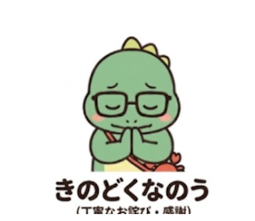
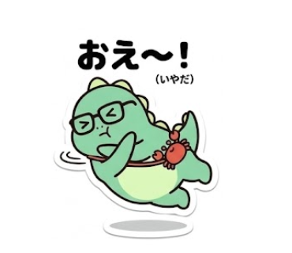
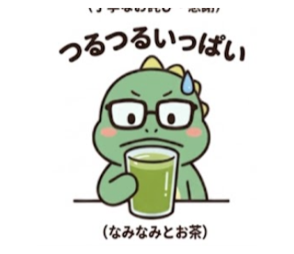
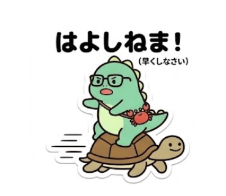

福井出身の人なら
思わずニヤッ！
県外の友達とのトークで盛り上がる！
懐かしい福井弁がいっぱいの
ゆるかわ恐竜スタンプ🦖

ほやほや！
LINE STOREへ移動します
福井出身のあなたへ
懐かしい福井弁で
友達との会話をもっと楽しく！

ほやほや！
そうそう！

きのどくなの
ありがとう

おえ〜
嫌だ〜

はよしねま
早くして
だんねーよ
大丈夫だよ
ほっこりしたわ
安心した

つるつるいっぱい
並々いっぱい

あかんけ
ダメだよ
トークで使うとこんな感じ！
友
今日飲みに行く？
既読
19:00
19:00
友
手伝ってくれてありがとう！
既読
19:05
19:05

友
ごめん！準備遅れてる！💦
既読
21:30
21:30

📖 収録されている福井弁辞典
ほやほや
意味：そうそう、その通り
使用例：
「今日暑いのー」
「ほやほや！」
きのどくなの
意味：ありがとう、申し訳ない
使用例：
「手伝ってくれてありがとう」
「きのどくなの」
あかんけ
意味：ダメだよ、いけないよ
使用例：
「そんなことしたらあかんけー」
福井弁の恐竜くん「ほやほや」って？

- 出身福井県
- 好物越前おろしそば
- 特技福井弁で応援すること
- 宝物カニバッグ
- チャームポイント鯖江のメガネ